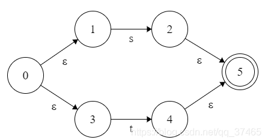

编译原理-设计与实现
前言
这里通过学习StanFord CS143课程，学习编译相关的基础和原理
编译器结构
一般来说，目前的编译器包括如下五部分
- Lexical Analysis(词法分析)
- Syntax Analysis/Parsing(语法分析)
- Semantic Analysis(语义分析)
- Optimization(代码优化)
- Code Generation(代码生成)
Lexical Analysis
词法分析是编译器的第一个阶段，其读入源程序的输入字符、将它们组成词素，生成并输出一个词法单元序列，每个词法单元对应于一个词素。
目前实现词法分析通过如下几个步骤
- 将词法模式转换为正则表达式
- 将正则表达式转换为NFA
- 将NFA转换为DFA
实现DFA
正则表达式
通过定义一组基础的运算，则可以递归的定义出正则表达式
| 运算 | 定义和表示 |
|---|---|
| Union | |
| Concatenation | |
| Iteration |
那么在字母表上的正则表达式含义如下所示
- 如果是正则表达式，则其表示
- 如果是正则表达式，则其表示
- 如果r和s都是正则表达式，则表示
- 如果r和s都是正则表达式，则表示
如果r是正则表达式，则表示
实际上，通过制定合理的正则表达式，则可以匹配程序中所有的词素——关键字、标识符、数字常量以及空白等，从而完成词法分析
Nondeterministic Finite Automata
一个不确定有穷自动机由以下几个部分组成
- 一个有穷的状态集合
- 一个输入符号集合，即输入字母表。这里假设代表空串的不是的元素
- 一个转换函数，其为每个状态和中的每一个符号给出其相应的后继状态的集合
- 中的一个状态被指定为开始状态或初始状态
中的一个子集被指定为接受状态或终止状态集合
根据上述描述，最终NFA可以通过一张转换图描述——从状态s到状态t存在一条标号为a的边，当且仅当状态t是状态s在输入a上的后继状态之一
NFA具有如下性质:
- 同一个符号可以标记从同一个状态出发到达多个目标状态的多条边
- 一条边的标号不仅可以是输入字母表中的符号，也可以是空符号串

而通过McMaughton-Yamada-Thompson算法，可以轻松的实现正则表达式到NFA的转换，其规则如下所示
- 对于正则表达式，构造如下的NFA
- 对于中的字符的正则表达式，构造如下的NFA
- 对于正则表达式和，其对应的NFA分别为N(s)和N(t)，则对于正则表达式，构造如下的NFA
- 对于正则表达式和，其对应的NFA分别为N(s)和N(t)，则对于正则表达式，构造如下的NFA
- 对于正则表达式，其对应的NFA为N(s)，则对于正则表达式，构造如下的NFA
Deterministic Finite Automata
实际上，确定有穷自动机是不确定有穷自动机的一个特例。一个确定有穷自动机由以下几个部分组成
- 一个有穷的状态集合
- 一个输入符号集合，即输入字母表。这里假设代表空串的不是的元素
- 一个转换函数，其为每个状态和中的每一个符号给出其相应的后继状态的集合
- 中的一个状态被指定为开始状态或初始状态
中的一个子集被指定为接受状态或终止状态集合
根据上述描述，最终DFA可以通过一张转换图描述——从状态s到状态t存在一条标号为a的边，当且仅当状态t是状态s在输入a上的后继状态之一
DFA具有如下性质:
- 没有输入之上的转换动作
- 对每个状态和每个输入符号，有且只有一条标号为的边离开

而从NFA转换为DFA，实际上并不是非常困难，通过如下操作即可
| 操作 | 描述 |
|---|---|
| -closure(s) | 能够从NFA的状态s，只通过转换到达的NFA状态集合 |
| -closure(T) | 能够从T中某个NFA状态s，只通过转换到达的NFA状态集合，即-closure(s) |
| move(T, a) | 能够从T中某个NFA状态s，通过标号为a转换到达的NFA状态的集合 |
然后执行如下算法，将NFA转换为DFA
1
2
3
4
5
6
7
8
9
10T <- s0
Q <- e_closure(s0)
workList <- {s0}
while (workList != [])
remove T from workList
foreach (character c)
t <- e_closure(move(T, c))
D[T, c] <- t
if (t not in Q)
add t to Q and workList
而实际上，DFA实现起来是比较简单的，通过查表即可实现。
这样，就实现了词法分析的整体流程
PA2 Lexical Analyzer
实验描述
在该实验中，需要通过编写Flex规则，从而完成Cool的词法分析，并且返回token的类型和值。
需要注意的是，实现的词法分析器应该具有足够的鲁棒性——可以在任何输入下都正常工作，即可以处理错误
实验环境
该实验中依赖2.5.35版本的Flex，则在assignments/PA2目录执行如下命令设置环境
1
2
3sudo apt-get update \
&& sudo apt-get install -y m4 \
&& (cd ../../bin/flex; ./configure; make; sudo make install)
实验实现
下面是个人的思路及其实现
实际上，这个实验就是定义解析Cool的Flex规则
因此，需要了解Flex的使用方法——可以查看Flex的手册。虽然版本不一致，但是整体并没有太大的区别。
Cool语言中的词素大抵可以分为变量名称、变量类型、关键字、空白字符、整形常量、注释、字符串常量和有效字符
变量名称
根据cool-manual可知——变量名称由数字、字母和下划线组成，且其首字母小写。
则基于此，可以很容易给出相关的正则表达式，并在Flex中给出相应的规则即可
1
2
3
4
5
6
7 /*
* 处理变量名称情况
*/
[a-z][a-zA-Z_0-9]* {
cool_yylval.symbol = idtable.add_string(yytext, yyleng);
return OBJECTID;
}
变量类型
根据cool-manual可知——变量类型由数字、字母和下划线组成，且其首字母大写。
则类似变量名称，可以很容易给出相关的正则表达式，并在Flex中给出相应的规则即可
1
2
3
4
5
6
7 /*
* 处理变量类型情况
*/
[A-Z][a-zA-Z_0-9]* {
cool_yylval.symbol = idtable.add_string(yytext, yyleng);
return TYPEID;
}
关键字
根据cool-manual可知，关键字就是保留的固定的字符串，包括class、else、false、fi、if、in、inherits、isvoid、let、loop、pool、then、while、case、esac、new、of、not、true
对于true和false来说，其首字母小写，其余字母可大写可小写；而对于其余的关键字来说，全部为小写。
则Flex中的规则如下所示
1
2
3
4
5
6
7
8
9
10
11
12
13
14
15
16
17
18
19
20
21
22
23
24
25
26
27
28
29
30
31
32
33
34
35
36
37
38
39
40
41
42
43
44
45
46
47
48
49
50
51
52
53
54
55
56
57
58
59
60
61
62/*
* Define names for regular expressions here.
*/
/*关键词相关的定义*/
CLASS class
ELSE else
FI fi
IF if
IN in
INHERITS inherits
ISVOID isvoid
LET let
LOOP loop
POOL pool
THEN then
WHILE while
CASE case
ESAC esac
NEW new
OF of
TRUE t(r|R)(u|U)(e|E)
FALSE f(a|A)(l|L)(s|S)(e|E)
LE <=
DARROW =>
ASSIGN <-
NOT not
%%
/*
* Keywords are case-insensitive except for the values true and false,
* which must begin with a lower-case letter.
*/
{DARROW} { return (DARROW); }
{CLASS} { return CLASS; }
{ELSE} { return ELSE; }
{FI} { return FI; }
{IF} { return IF; }
{IN} { return IN; }
{INHERITS} { return INHERITS; }
{ISVOID} { return ISVOID; }
{LET} { return LET; }
{LOOP} { return LOOP; }
{POOL} { return POOL; }
{THEN} { return THEN; }
{WHILE} { return WHILE; }
{CASE} { return CASE; }
{ESAC} { return ESAC; }
{NEW} { return NEW; }
{OF} { return OF; }
{NOT} { return NOT; }
{ASSIGN} { return ASSIGN; }
{LE} { return LE; }
{TRUE} {
cool_yylval.boolean = true;
return BOOL_CONST;
}
{FALSE} {
cool_yylval.boolean = false;
return BOOL_CONST;
}
空白字符
根据cool-manual可知——空白字符包括`、\n、\f、\r、\t、\v`
这里特别需要注意的是\n——因为其另起一行，因此还需要更新Flex中定义的curr_lineno即可
最终Flex的规则如下所示
1 | /*处理换行*/ |
整形常量
根据cool-manual可知——整形常量就是全部由数字组成的词素
因此其Flex规则也非常简单，如下所示
1
2
3
4
5
6
7 /*
* 处理Integers情况
*/
[0-9]+ {
cool_yylval.symbol = inttable.add_string(yytext, yyleng);
return INT_CONST;
}
注释
注释可以简单分为单行注释和多行注释
- 单行注释
从—开始一直到当前行结尾，则其Flex规则通过通配符实现，如下所示1
2
3
4/*
* 处理单行注释情况
*/
--.*$ {++curr_lineno;} 多行注释
根据cool-manual可知，注释涉及两次匹配(匹配开始(*、匹配结束*))，因此可以使用Flex提供的Condition语法糖
当匹配到多行注释起始模式(*后，其按照匹配的先后顺序可以分为如下几种情况- )
这里则表示多行注释已经结束，则退出Flex的*Condition模式即可 - \n
则更新curr_lineno，从而同步行号即可 - <
>
此时已经到文件结尾，但是注释未闭合，则返回异常信息即可 - .
剩余的情况，则直接忽略掉即可
这里还需要注意的是，如果只有*)，则直接报错其未闭合即可。最终其Flex规则如下所示
1
2
3
4
5
6
7
8
9
10
11
12
13
14
15
16
17
18
19
20
21
22/*注释相关的Condition*/
%x comment
%%
"(*" {BEGIN(comment);}
<comment><<EOF>> {
BEGIN(INITIAL);
cool_yylval.error_msg = "EOF in comment";
return ERROR;
}
<comment>"*)" {BEGIN(INITIAL);}
<comment>\n {++curr_lineno;}
<comment>. {}
/*
* 处理只有右侧comment的情况
*/
"*)" {
cool_yylval.error_msg = "Unmatched *)";
return ERROR;
}- )
字符串常量
和前面的注释非常相似，涉及两次匹配(匹配开始“、匹配结束“)，因此可以使用Flex提供的Condition语法糖
当匹配到多行注释起始模式“后，其按照匹配的先后顺序，可以分为如下几种情况
- “
表示当前字符串常量已经结束，则退出Flex的Condition模式即可 - \\n
表示当前字符串常量没有结束，下一行也属于字符串常量，但要注意更新curr_lineno - \0
Cool中的字符串常量不允许包含\0，则跑出相关异常即可 - \b、\t、\n、\f
会被转移成相对应的字符 - \.
剩余的转义模式，仅仅保留后面的字符即可 - <
>
此时已经到文件结尾，但是字符串常量未闭合，则返回异常信息即可 .
剩余情况，则直接保留近字符串常量中这里还需要注意如果字符串长度过长的问题，通过判断当前存储的字符个数即可实现。最终其Flex规则如下所示
1
2
3
4
5
6
7
8
9
10
11
12
13
14
15
16
17
18
19
20
21
22
23
24
25
26
27
28
29
30
31
32
33
34
35
36
37
38
39
40
41
42
43
44
45
46
47
48
49
50
51
52
53
54
55
56
57
58
59
60
61
62
63
64
65
66
67
68
69
70
71
72
73
74
75
76
77
78/*字符串相关的Condition*/
%x string
%%
/*
* String constants (C syntax)
* Escape sequence \c is accepted for all characters c. Except for
* \n \t \b \f, the result is c.
*
*/
\" {
string_buf_ptr = string_buf;
BEGIN(string);
}
<string><<EOF>> {
BEGIN(INITIAL);
cool_yylval.error_msg = "EOF in string constant";
return ERROR;
}
<string>\\\n {++curr_lineno;}
<string>\\b {
if((string_buf_ptr - string_buf) > MAX_STR_CONST) {
BEGIN(INITIAL);
cool_yylval.error_msg = "String const too long";
return ERROR;
}else {*(string_buf_ptr++) = '\b';}
}
<string>\\t {
if((string_buf_ptr - string_buf) > MAX_STR_CONST) {
BEGIN(INITIAL);
cool_yylval.error_msg = "String const too long";
return ERROR;
}else {*(string_buf_ptr++) = '\t';}
}
<string>\\n {
if((string_buf_ptr - string_buf) > MAX_STR_CONST) {
BEGIN(INITIAL);
cool_yylval.error_msg = "String const too long";
return ERROR;
}else {*(string_buf_ptr++) = '\n';}
}
<string>\\f {
if((string_buf_ptr - string_buf) > MAX_STR_CONST) {
BEGIN(INITIAL);
cool_yylval.error_msg = "String const too long";
return ERROR;
}else {*(string_buf_ptr++) = '\f';}
}
<string>\\0 {
BEGIN(INITIAL);
cool_yylval.error_msg = "String contains null character";
return ERROR;
}
<string>\\. {
if((string_buf_ptr - string_buf) > MAX_STR_CONST) {
BEGIN(INITIAL);
cool_yylval.error_msg = "String const too long";
return ERROR;
}else {*(string_buf_ptr++) = yytext[1];}
}
<string>\n {
BEGIN(INITIAL);
cool_yylval.error_msg = "Unterminated string constant";
return ERROR;
}
<string>\" {
BEGIN(INITIAL);
cool_yylval.symbol = stringtable.add_string(string_buf, string_buf_ptr - string_buf);
return STR_CONST;
}
<string>. {
if((string_buf_ptr - string_buf) > MAX_STR_CONST) {
BEGIN(INITIAL);
cool_yylval.error_msg = "String const too long";
return ERROR;
}else {*(string_buf_ptr++) = yytext[0];}
}
有效字符
最后，我们保留Cool中有效的单个字符——.、+、-、*、/、(、)、{、}、；、:、，、=、<、~和@
剩余如果没有匹配上，则证明其是非常词素，则直接抛出异常即可
1 | /* |
实验结果
cmp.py
为了观察自己实现的词法解析程序的效果，通过与标准的词法解析器的输出进行比较来实现
即通过正则表达式获取自己实现的词法解析器和标准的词法解析器对于同一个源程序的解析结果，并进行对比即可
程序的源代码如下所示
1
2
3
4
5
6
7
8
9
10
11
12
13
14
15
16
17
18
19
20
21
22
23
24
25
26
27
28
29
30
31
32
33
34
35
36
37
38
39
40
41
42
43
44
45import re
import sys
'''
参数1： path 字符串，表明要读取的文件路径
返回值： 列表，每一个元素表示一行的信息
读取制定文件的词法解析结果
即通过正则表达式，读取#[0-9]+ (.*)的的输入即可，其每一行的信息为(行号，内容)
'''
def read_lexical_result(path):
res = []
with open(path) as f:
lines = f.readlines()
for line in lines:
result = re.match(r'#([0-9]+) (.*)$', line)
if(result):
res.append([result.group(1), result.group(2)])
return res
if __name__ == '__main__':
if(len(sys.argv) < 4):
exit(-1)
'''
sys.argv[1]表示原始文件名称
sys.argv[2]表示标准词法解析器的结果
sys.argv[3]表示自己实现的词法解析器的结果
'''
lexer_output = read_lexical_result(sys.argv[2])
mylexer_output = read_lexical_result(sys.argv[3])
same_number = 0
diff_result = []
for i in range(len(lexer_output)):
if(lexer_output[i][1] == mylexer_output[i][1]):
same_number += 1
else:
diff_result.append([mylexer_output[i][0], lexer_output[i][1], mylexer_output[i][1]])
print("\033[32;1m%s: %d/%d\033[0m"%(sys.argv[1], same_number, len(lexer_output)))
for i in range(len(diff_result)):
print('#%s: \033[32;1mlexer_output: %s; \033[31;1mmylexer_output: %s\033[0m'%(diff_result[i][0], diff_result[i][1], diff_result[i][2]))
print('')
Makefile
然后更改Makefile中的doteset目标
分别调用自己实现的词法解析器和标准的词法解析器，处理./*cl和../../examples/*cl，并调用前面实现的cmp.py，比较输出结果，从而进行测试
修改的Makefile目标如下所示
1
2
3
4
5
6
7dotest: lexer test.cl
for file in $$(find ../../examples/*.cl; find ./*.cl); do \
basename=$$(echo $$file | awk -F / '{print $$NF}' | awk -F . '{print $$1}'); \
../../bin/lexer $$file > lexer.$$basename.out; \
./lexer $$file > mylexer.$$basename.out; \
python3 cmp.py $$basename lexer.$$basename.out mylexer.$$basename.out; \
done
最终，其运行结果如下所示
其中，标红部分表示自己实现的词法解析器和标准的词法解析器解析的结果不同
但是，实际上这部分按照实验指导的规则，应该和自己实现的词法解析器结果相同，这里就不需要在查看了